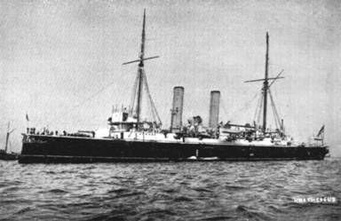
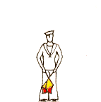
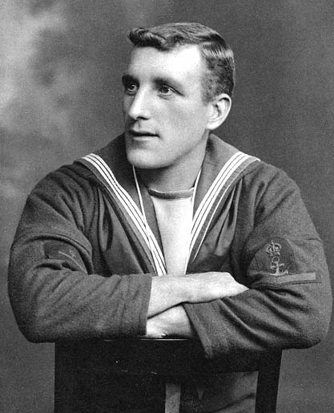
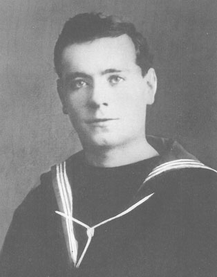
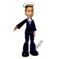

The Second
HMS THESEUS
1892


The second Theseus was laid down as a first-class cruiser of 7,350 tons, under the Naval Defence Act Programme, at the Blackwall Yard of the Thames Ironwork Co, and launched on 9th September 1892, from the yard where the first Theseus had been built 108 years before. Built of steel, she was twin-screw, engined by Messrs. Mawdsley & Co., and given eight single-ended boilers capable of steaming her at 20 knots. Her length was 360 feet, and beam 60 feet, and she carried two 9.2in. guns (each of which weighed 22 tons and was worked entirely by hand), and ten 6in. guns. She also had four torpedo tubes, two of which were submerged.
She was commissioned on 14th January 1896, for "particular service" and went to the Cape of Good Hope station with the Flying Squadron under Rear-Admiral A.T. Dale. The assembly of warships on this station was brought about immediately after the Jameson Raid, when it seemed likely that there would be trouble in South Africa. Events at that time had stimulated an anti-British feeling amongst some of the settlers, and an unpleasant situation had arisen. Nothing of importance occurred however, and the squadron was dispersed on 21st October 1896.

Theseus sailed for the Mediterranean, where she stayed until the following year, when she was sent to assist in the Benin Expedition.
Early in 1897, a party of British officials had been attacked and massacred on their way to visit Adubowa, the King of Benin, in the Niger Coast Protectorate. Adubowa had previously said that he could not receive them as he was making Ju-Ju, but later when it was explained to him that the mission was of importance, he agreed to meet them at Benin. The party set off, and as they neared the City, discovered the mutilated corpses of the advance party of bearers: they kept on for Benin however, but just before they reached the city, the natives set upon them, and killed a large proportion, including the Acting Consul General. One or two escaped into the jungle, and after wandering for days, came across natives of a different tribe, who succoured them, and assisted them back to their headquarters, where they told their tale. Rear-Admiral Rawson, C.inC. of the Station was immediately instructed to undertake the reduction of Benin City, and arranged a punitive expedition under General Sir Herbert Kitchener. Theseus was at Malta, and, although due to return to the United Kingdom, was sent to West Africa with another ship-H.M.S. "Forte." By February 3rd, there were assembled Theseus, Forte, St.George, Philomel, Phoebe, Magpie, Barossa, and Alecto. The landing party consisted of 1.200 men, of whom Theseus provided one company of sailors and her marines, under Captain Campbell, RN.
Benin is about 400 miles north of the equator, and situated in a marshy part of the jungle. On account of the extremely unhealthy coastal belt, great care was taken to check all stores before landing, to enable the party to advance immediately instead of exposing themselves to the dangers of the swampy coastline.
During the march to Benin, traces of the enemy were frequently found, the path through the jungle being strewn with the bodies of natives sacrificed to the idols. The natives were of a very backward and unenlightened type, and of extreme paganism. Goats with broken legs, huts smeared with blood- these were Ju-Ju placed in the path of the British by the native priests, in the hope that they would be recognized as bad omens and the expedition abandoned.
There were several skirmishes with the natives before the main objective was reached, and some British casualties occurred. The king and his priests had fled to the jungle, leaving natives behind to defend the city, but after five days fighting, Benin was captured and burned to the ground.
It is stated that on the return march, the sailors of Theseus were preceded by a goat, which led them the whole way back. This animal was taken on board, and it is said that it took a delight in encouraging the sailors to double about the ship!
Theseus returned to Chatham for refit, and Captain Campbell, who had played an outstanding part in the expedition, was awarded the DSO.
At the start of the century, Theseus was on the Mediterranean station, and later in the Channel Squadron. She then spent seven years (from 1905 to 1912) as the gunnery firing ship attached to RN. Barracks, Devonport - this, during a period when naval gunnery was making great strides.
In February 1913, she joined the training squadron at Queenstown, and until the war, cruised off the West Coast of Scotland to Campbeltown and Tobermory, with boys under training.

In the summer of 1914, the boys were landed at Plymouth, and Theseus commissioned for war. In August she joined the 10th Cruiser Squadron -known as the Muckle Flugga Hussars - at Scapa Flow. This squadron was formed to control the maritime trade in the Northern seas, and to give effect to our blockade of Germany on this route. On one occasion, 15th October 1914, when she was post-ship for the squadron, she had lowered a boat with mails for the Hawke, early in the afternoon, and only by a sharp turn avoided a torpedo fired from the German submarine U.17. It was learned later that Hawke had been torpedoed and sunk by U.9. earlier in the day.
Whilst based in the Orkneys, Theseus made one trip across to Kola Inlet in North Russia, to show the flag and to reassure merchantmen, whom it was thought might scuttle themselves there. Before the White Sea began to freeze up for the winter, she returned, carrying two Russian Naval officers, with secret documents, and a lot of personal belongings of Princess Louis of Battenburg, which had been cut off in Prussia.
In July 1915, Theseus docked at Belfast and was fitted with bulges as torpedo-protection. Her sister ships of the 10th CS. Edgar, Endymion and Grafton were also so-fitted, and were later known as "blister ships." August of the same year saw Theseus landing 1,000 men at Suvla Bay for the second stage of the Allied attempt to capture the Dardanelles. No casualties were suffered while she disembarked the troops, and she anchored off shore in order to maintain a steady covering fire.
In October of that year, Bulgaria declared war on Serbia and Admiral de Robeck, in charge of the British Squadron, was ordered to blockade the Bulgarian coast. On October 21st the Russians bombarded Varna in the Black Sea and Admiral de Robeck bombarded Dede Agatch in the Aegean Sea, both Bulgarian ports. Theseus was in company with Doris, which was senior ship, and opened fire on the barracks at 4,800 yards.
Hundreds of troops were seen hurrying to the hills as shells from Theseus reduced the barracks to a burning shambles. In spite of a bitterly cold northeasterly gale, a rapid fire was kept up, and the second target, consisting of the main line railway and sidings crowded with rolling stock was successfully eliminated. During the bombardment, care was taken to avoid shelling the town where there were no important objectives.
A fortnight before Christmas of 1915, Theseus was engaged in covering the withdrawal of our troops from Anzac Cove: her fire, combined with that of Grafton, surprised the enemy and inflicted great slaughter among the Turks. Soon after the New Year a similar task was allotted to her and she was again covering the withdrawal of allied troops - this time at Helles.
In 1917, Theseus worked with the Aegean Squadron and at the close of the war was sent into the Black Sea and stationed at Batum.
She had led a useful life and had been a very happy ship, but by now she was out of date and on 2nd February 1921, was paid off and laid up at Sheerness. In May 1921 she was sold with 112 other redundant warships to Messrs. T. W. Ward, ship-breakers, of Sheffield.
